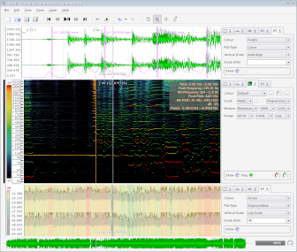
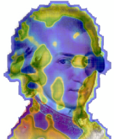

ISMIR 2006 - Day 1 Poster Session
I always enjoy the poster sessions, its a great chance to talk with a
researcher about their work, see their demos, discuss their results.
The difficulty with poster sessions at ISMIR, is that many times, a poster includes a demo of some sort that includes music, and it is just too noisy in the poster area to hear any kind of music. Also, this year, the food tables were positioned a bit too close to the posters, making it tough to get to some posters (I noticed in the second poster session they had repositioned things to make a little more room).
There were nearly 20 posters shown on Monday. I wish I had time to write about all of the interesting ones, but let me highlight a few.
The folks from UPF were showing a demo of 'Good Vibrations', a tool for music tagging, exploration and discovery. This system allows users to tag songs with their own 'concepts' The system learns how these relate these concepts to the audio content.
This is a WinAmp plugin that collects music features and sends them back to a server where they are collected and will eventually be made available for researchers. You can sign up to be a beta tester for MirRocket at IntelligentSound.
I was never able to get close enough to hear her pitch, there always seemed to be a group at the poster.
The difficulty with poster sessions at ISMIR, is that many times, a poster includes a demo of some sort that includes music, and it is just too noisy in the poster area to hear any kind of music. Also, this year, the food tables were positioned a bit too close to the posters, making it tough to get to some posters (I noticed in the second poster session they had repositioned things to make a little more room).
There were nearly 20 posters shown on Monday. I wish I had time to write about all of the interesting ones, but let me highlight a few.
The folks from UPF were showing a demo of 'Good Vibrations', a tool for music tagging, exploration and discovery. This system allows users to tag songs with their own 'concepts' The system learns how these relate these concepts to the audio content.
This is a WinAmp plugin that collects music features and sends them back to a server where they are collected and will eventually be made available for researchers. You can sign up to be a beta tester for MirRocket at IntelligentSound.
Particularly impressive is the Sonic Visualiser
being offered by researchers at Queen Mary's. The Sonic Visualizer is a
system that assists in the visualization of audio data (and music in
particular). The Sonic visualizer is released as open source and
distributed under a the GPL, and is available for Linux, Mac OS X and
Windows.

Rebecca Fiebrink's poster on Feature Selection Pitfalls and Music Classification was particularly popular.

I was never able to get close enough to hear her pitch, there always seemed to be a group at the poster.
And
how can I fail to mention the 'Map of Mozart' - where researchers
at Vienna create a self-organizing-map of the music of Mozart into the
shape of Mozart himself! Read more about this at "The Map of Mozart"

Yes,
there were many more posters, and I wish I had time to write about them
all, but now it is time to go find some breakfast and get ready for
ISMIR day 2!